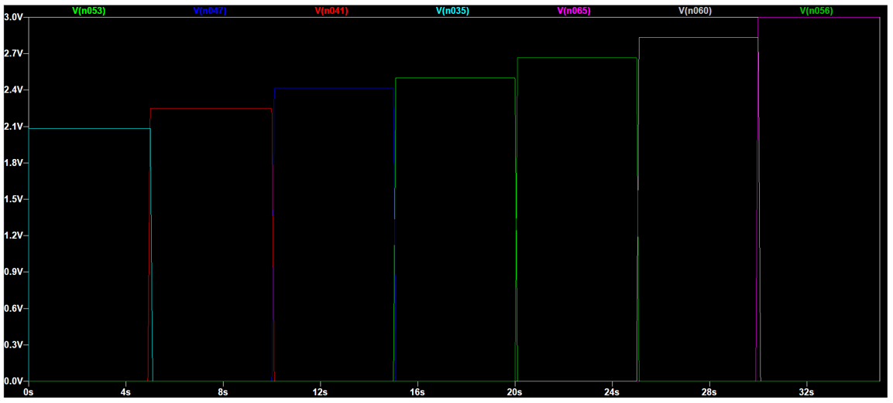

Projects
Analogue Music Synthesiser - June 2021

The analogue music synthesiser is developed as part of the Year 1 summer group project module at Imperial College London.
To build a working monophonic synthesiser, my team have focused on developing one that comprises a voltage-controlled oscillator (VCO), voltage-controlled frequency (VCF), voltage-controlled amplitude (VCA) and envelope detector (ADSR) to produce the intended notes. To further extend the capabilities of an analog synthesiser, tremolo and vibrato circuits were added so the synthesiser provides practical features.
The use of MATLAB and other graphing tools was utilised accordingly to prove that the result achieved was explained completely from different perspectives. LTSpice was used throughout the project to design each circuit and for testing and validation purposes since the project was carried out during the pandemic and access to labs were not permitted.

Access the full report here.